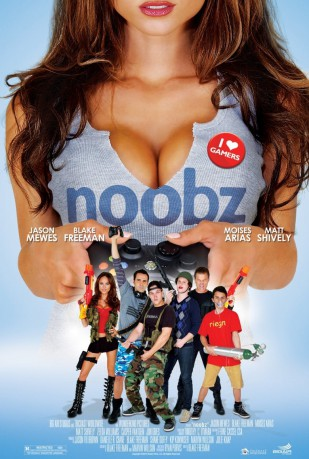

#9192 Noobz - Game Over
Alternativ: Noobz
 
 IMDB-Wertung: 4.9 / 10
IMDB-Wertung: 4.9 / 10  Metascore: 0
Metascore: 0 
Vier junge Männer, die sich hauptsächlich über das Internet und dieselbe Begeisterung für dasselbe Online-Ballerrollenspiel kennen lernten, beschließen gemeinsam ihr Glück zu versuchen als Mannschaft in einer offiziellen Endausscheidung der besten ihrer Spielerzunft. So bricht man voll großer Hoffnungen und ausgestattet mit geringen Mitteln auf zur ereignisreichen Cross-Country-Autoreise nach Kalifornien, um Abenteuer zu erleben, neue Freunde und neue Feinde zu gewinnen, und einander besser kennen zu lernen.
Jahr: 2012
Dauer: 100 Minuten
FSK: 16
Land: USA Studio: Big Air StudiosTonspuren: DTS - ,
Untertitel:
Auflösung: 1080p (1920x1080) Größe: 6154 MB
Genre: Komödie
Regisseur: Blake Freeman
Drehbuch: Jeremy Adams
Soundtrack:
Darsteller:
 Moises Arias als Hollywood
Moises Arias als Hollywood Lin Shaye als Mrs. Theodore
Lin Shaye als Mrs. Theodore Jason Mewes als Andy
Jason Mewes als Andy Mindy Sterling als Mrs. Robinson
Mindy Sterling als Mrs. Robinson Sabrina Carpenter als Brittney
Sabrina Carpenter als Brittney Jon Gries als Greg Lipstein
Jon Gries als Greg Lipstein Richard Speight Jr. als Jeff
Richard Speight Jr. als Jeff Casper Van Dien als Casper Van Dien
Casper Van Dien als Casper Van Dien- Matt Shively als Oliver
 Carly Craig als Melissa
Carly Craig als Melissa- Zelda Williams als Rickie
 Rick Overton als Martin Wilson
Rick Overton als Martin Wilson Jesse Heiman als Computer Guy
Jesse Heiman als Computer Guy- Bill Bellamy als Brian Bankrupt Simmons
 Skylan Brooks als Chomomma
Skylan Brooks als Chomomma- Robert Parks-Valletta als Bartender
- India Oxenberg als Pixie Teammate
- Johnny Alves als Referee
- Asif Ali als Gas Station Clerk
- David Hoffman als Angry Customer
- Catherine Annette als Cocktail Waitress
- Kalilah Harris als Exotic Dancer
- Michael J. Sielaff als Employee Chris
- Blake Freeman als Cody
- Jennifer Manley als Ticketing Agent
- Nathalie Merchant als Challenger
- Brien Perry als Mr. Perry
- Adam Sessler als Adam Sessler
- Samba Schutte als Sports Bar Fan
- Gene Loveland als EMT #2
- Charlene May als Pixie Teammate
 Pride Grinn als Greg's Opponent
Pride Grinn als Greg's Opponent- Bo Burroughs als Robert NVL
- Kerry Wynnyk als Neighbor
- Ricky Titus-Lam als Nerdy Student
- Jason Vu als EMT #1
- Dustin Kydd als Acid rain #4
- I. Elijah Baughman als Restaurant Customer (uncredited)
- Ashley A. Thomas als Missy
- Bette Rae als Molly
- Caroline Kinsolving als Sarah Cronin
- Alex Mandel als Brian - NVL
- Fabian Alomar als Anthrax
- Paul Ballin als Corey
- Evan Avtal als Team Gunnar
- Gray Ellis als Tournament Spectator
- Eddy Lord als Waiter
- Valerie Humbard als Game Con Girl
- Julia Lescova als Julia
- Nino Nava als Game Convention Guy
Datei: X:\2012(N-Z)\Noobz - Game Over (2012, FSK16, 1920x1080).mkv seit 19.07.2018
Festplatte: HD 2012(N-Z)-2013(A-H)
 Es gibt insgesamt 138 Filme in der Gruppe '2012(N-Z)'
Es gibt insgesamt 138 Filme in der Gruppe '2012(N-Z)'